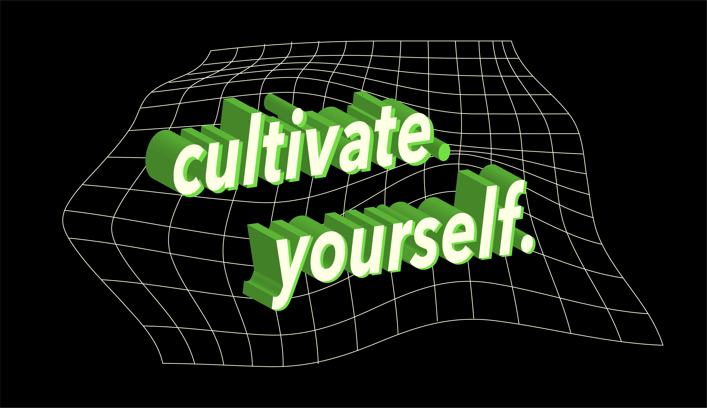

for a plant, life is simple. just grow. take in the few things one needs—sunlight, water, nutrients—and just become more of what you were always meant to be: a bigger plant.
as humans, we often get lost chasing abstract notions of “success”. we prioritize a job or seek prestige over our health and general well-being. but similar to a plant, true success is self-growth. we are all different and require different things to become the people we were always meant to be, but the process is similar and the focus identical—it’s about cultivating yourself.
this means putting yourself in positions where you can best learn and grow—intellectually, experientially, and spiritually. the object isn’t to create yourself into the person you want to be, but instead to enter a state where the person you want to be becomes inevitable.
there’s something about you that you love about yourself—take that and magnify it.
and remember—
by cultivating yourself you become yourself.